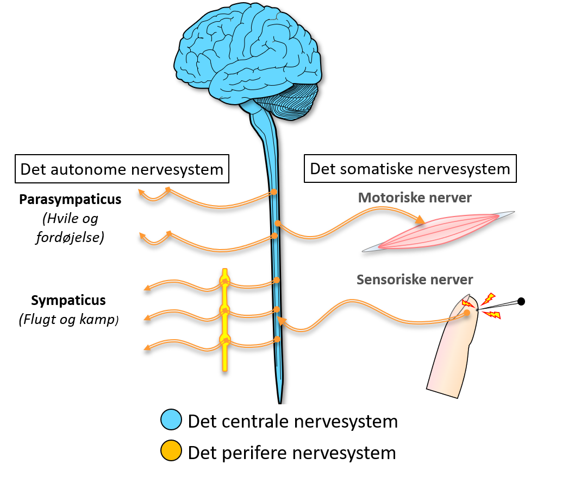
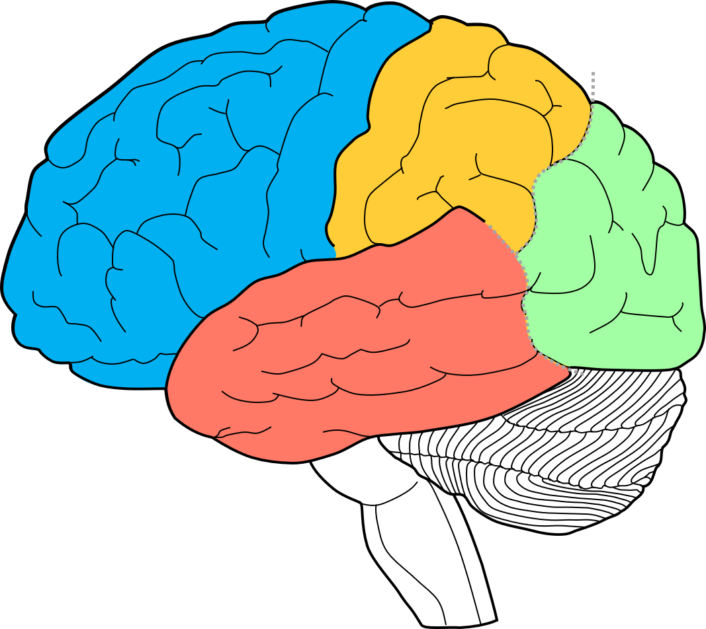
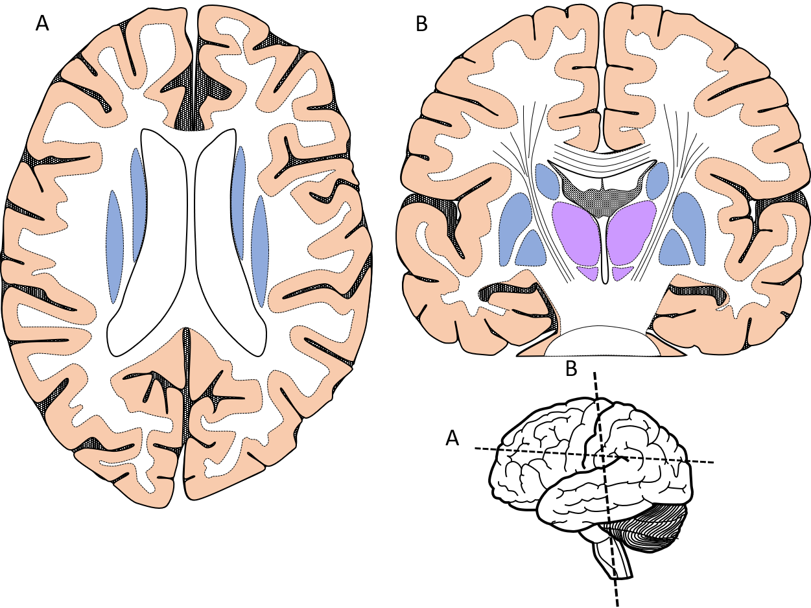
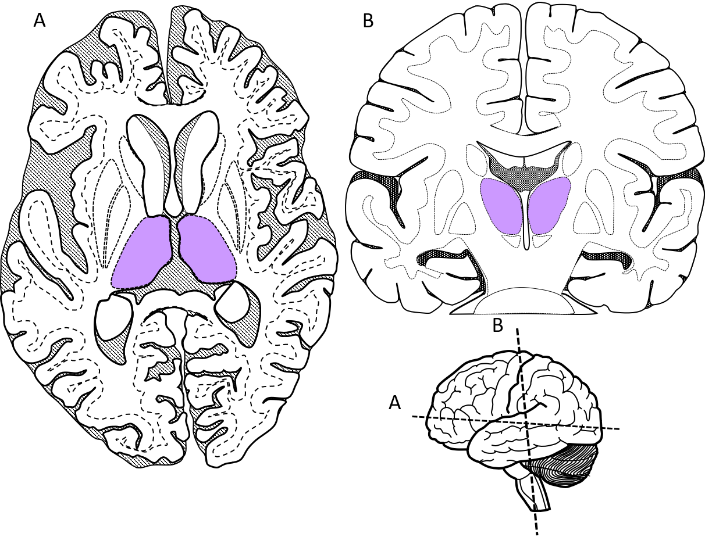
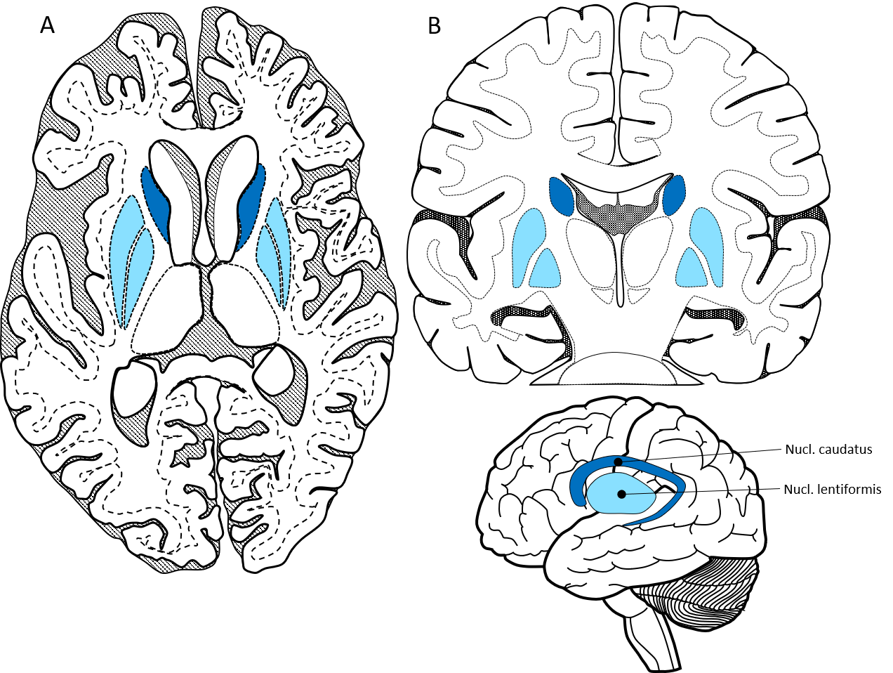
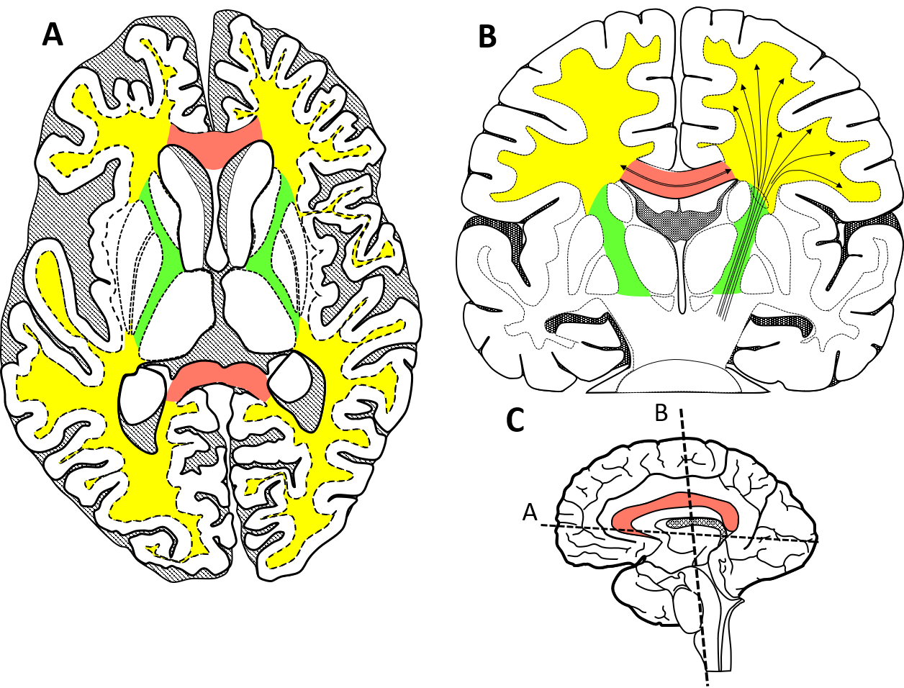

Nervesystemet kan groft opdeles i det centrale nervesystem (CNS) og det perifere nervesystem (PNS)
Opgave 1.1 Vælg to farver og marker på tegningen hvilke dele der tilhører, henholdsvis, det centrale og perifere nervesystem
Hjernen kan opdeles i tre niveauer:
1) For-hjernen
2) Lillehjernen
3) Hjernestammen
Opgave 2.1For-hjernen er den øverste del af hjernen og består af to dele:
Storhjernen
Mellemhjernen
Vælg to farver og farv de to dele på begge tegninger
Opgave 2.2 Lillehjernen (Cerebellum) er placeret under cerebrum og bag hjernestammen. Vælg en ny farve og farv lillehjernen på begge tegninger
Opgave 2.3
Hjernestammen består af tre dele:
Midthjernen
Pons
Medulla oblongata
Vælg tre nye farver og farv de tre dele af hjernestammen på begge tegninger
| Storhjernen (Cerebrum) | |
|---|---|
| Mellemhjernen (Diencephalon) | |
| Lillehjernen (Cerebellum) | |
| Midthjernen (Mesencephalon) | |
| Hjernebroen (Pons) | |
| Forlænget rygmarv (Medulla oblongata) |
Når man ser storhjernen fra siden, kan man se fire lapper. Tre af lapperne er adskilt af to dybe furer sulcus centralis og sulcus lateralis.
Opgave 3.1 Vælg fire farver. Farve de fire lapper på tegningen og skriv de tilsvarende navne nedenunder
Opgave 3.2 Angiv på tegningen hvilken retning der er henholdsvis anterior og posterior
Opgave 3.3 Marker disse to furer på tegningen: Sulcus centralis & Sulcus lateralis
| Frontallappen | |
|---|---|
| Parietallappen | |
| Occipitallappen | |
| Temporallappen |
De fire lapper, der er synlige fra storhjernens lateralside (ydersiden), fortsætter ind på medialside af storhjernens to hemisfærer
Opgave 4.1 Farve de fire lapper på tegningen med samme farver som tidligere og skriv de tilsvarende navne nedenunder
Opgave 4.2 De to hemisfærer er forbundet af hjernebjælken (Corpus callosum). Over hjernebjælken og ind imod midtlinjen ligger der en vinding, der betegnes gyrus cinguli – og som har betydning for at integrere følelser ind i andre hjerneprocesser. Marker gyrus cinguli på tegningen.
| Frontallappen | |
|---|---|
| Parietallappen | |
| Occipitallappen | |
| Temporallappen | |
| Gyrus cinguli | |
| Corpus callosum |
Når man ser på vævet i hjernen og rygmarven kan man se en farveforskel mellem forskellige strukturer.
Nogle dele af vævet er lysere (hvid substans), mens andet væv er mørkere (grå substans).
Det er tætheden af nerveceller i vævet, der er afgørende for farven – jo tættere cellerne ligger, des mørkere er vævet.
Opgave 5.1 Overfladen af både cerebrum og cerebellum er dækket af grå substans – kaldet kortex. Vælg en farve og farv kortex på begge tegninger.
Opgave 5.2 Dybere inde i hjernen ligger der en række kerner (nuclei) af grå substans, bl.a. basal ganglierne, thalamus og hypothalamus. Farv der kerner af grå substans, der er synlige på tegningerne.
| Kortex | |
|---|---|
| Basal ganglierne | |
| Thalamus/hypothalamus |
Udover den grå substans i kortex findes der også samlinger af grå substans
dybere ind i hjernen og hjernestammen.
Disse samlinger kaldes for kerner eller nuclei. De vigtigste kerner i storhjernen
er thalamus og basalganglie kernerne.
Thalamus fungere som en relæ-station der formidler information fra forskellige subkortikale strukturer op til kortex –
fx føres alle sensoriske baner igennem thalamus før de kommer op til kortex.
Opgave 6.1 Thalamus er placeret ind mod hver hemisfæres midtlinje, ind mod tredje ventrikel. Vælg en farve og farv de to thalami på begge tegninger.
Opgave 6.2 Alle sanseinput til hjernen skal igennem thalamus, før de føres videre op til kortex – på nær én sans. Find ud af hvilken specialiseret sans, der ikke føres igennem thalamus, men er direkte forbundet med det limbiske system?
Basalganglierne består af en række kerner – hvor de største er nucleus caudatus (halekernen) og nucleus lentiformis (den linseformede kerne). Basalganglierne har flere funktioner hvor nogle af de vigtigste er motoriske integration og læring, samt tilføjelse af emotioner til vores adfærd.
Opgave 7.1 Nucleus caudatus er en hestesko-formet struktur, der ligger langs lateralventriklerne på deres lateralside. Vælg en farve og farv nucleus caudatus på de to tegner
Opgave 7.2 Nucleus lentiformis er en linseformet struktur, der er placeret medialt for insula. Den er delt i to dele: putamen, der ligger yderst, og globus pallidus, der ligger mere medialt og nedad. Vælg to ny farver og farv henholdsvis putamen og globus pallidus.
Det meste af de hvide substans under kortex består af nervefibre, der forbinder de forskellige dele af central nervesystemet med hinanden. Flere steder er nervefibrene samlet i nogle specifikke strukturer, hvor af nogle væsentlige er hjernebjælken (corpus callosum), den interne kapsel (capsula interna) og corona radiata.
Opgave 8.1 Capsula interna er et samlet bundt af nervefibre, der forbinder pons med cerebrum. Capsula interna løber først lateralt for thalamus og herefter ind igennem den ring, som dannes af basal ganglierne. Vælg en farve og farv capsula interna på tegning A og B.
Opgave 8.2 Over basal ganglierne spreder capsula interna sig ud i en vifte, der kaldes corona radiata. Vælg en farve og farv corona radiata på tegning B
Opgave 8.3 Hjernebjælken (corpus callosum) ligger som en bred bjælke mellem cerebrums to hemisfærer og forbinder dem med hinanden. Vælg en farve og farv hjernebjælken på alle tre tegninger.
